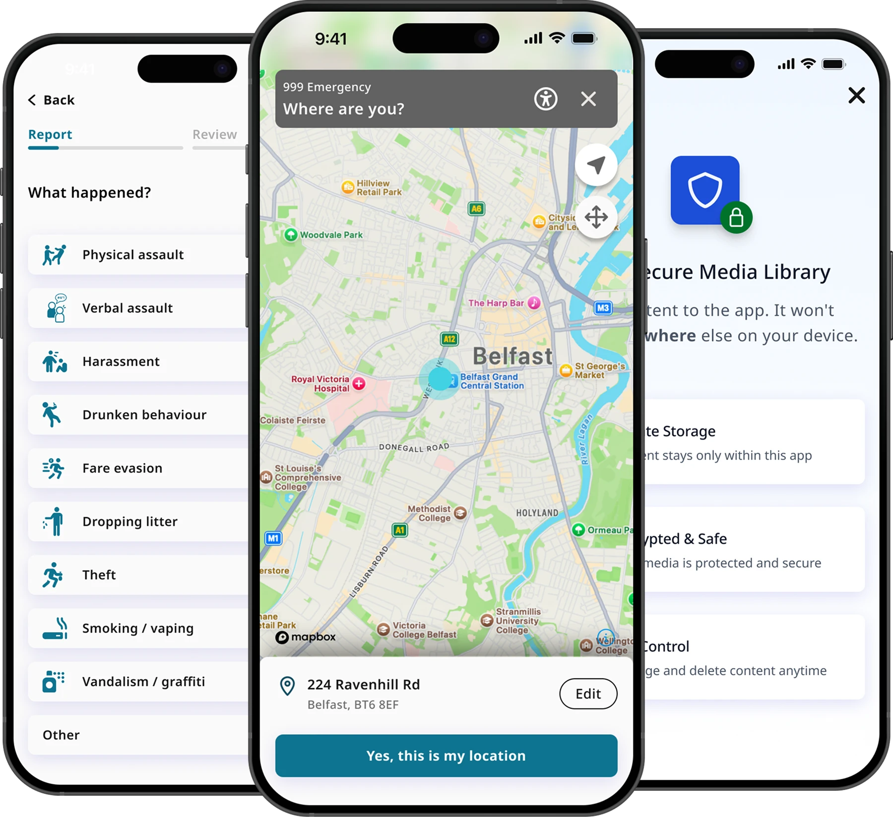

Case studiesTapSOS
TapSOS Designing an accessible emergency communication experience
Connect with the emergency services without saying a word. TapSOS is a fast, secure, non-verbal channel for emergencies where speaking isn’t possible or safe.
- Role
- End-to-end UX and UI
- Company
- Inclutech
- Year
- 2023
- Platform
- Mobile application
- Team
- Add team make-up
- Tested with
- Deaf community members

01The problem
Emergency services still assume you can speak.
999 in the UK relies on a voice call. That excludes anyone who can’t speak during a crisis, whether through disability, a medical event, or a situation where making a sound isn’t safe.
The brief
A fast, safe, accessible alternative that reduces stress while giving responders accurate information.
Success criteria
- Contact help without speech
- Cut cognitive load under pressure
- Meet a range of communication needs
- Scale through a growth-ready system
02Why it matters
The scale of the need
1 in 3
adults in the UK are deaf, have hearing loss or tinnitus.1
55+
Over half of people aged 55 and over have hearing loss.2
2.5B
people worldwide are projected to have hearing loss by 2050.3
This wasn’t an edge case. Designing for people who can’t speak is designing for millions, and for anyone on their worst day.
Sources: 1, 2. RNID, Prevalence of deafness and hearing loss. 3. WHO, Deafness and hearing loss.
03Discovery
Owning discovery end to end
Evidence-based decisions, not assumptions.
- User research and journey mapping
- Understanding real moments of crisis and where voice fails people.
- Competitor analysis
- Direct and indirect, mapping what exists and where the gaps are.
- Affinity mapping
- Clustering findings into the themes that shaped priorities.
- Site maps and storyboards
- Sketching structure and scenarios before opening Figma.
- Collaborative teamwork
- Bringing the team into the problem to align early.
- Defined success criteria
- Clear measures, so design choices could be judged rather than debated.


04Accessibility first
Accessibility was not an afterthought
Accessibility was a core design priority from the start rather than a final check. Every decision aimed to reduce barriers so people could act quickly and confidently when it mattered most.
- Colour contrast
- Legible for users with visual impairments.
- Typography
- Sized and spaced for fast scanning under stress.
- Touch targets
- Generous, for users with limited dexterity.
- Navigation
- Stripped back to minimal decision-making.
- Status indicators
- Reassurance that an action actually completed.
5.23:1Passes WCAG AA for normal text
05From sketch to system
Lo-fi to a scalable design system
I moved from lo-fi wireframes through mid-fidelity flows to interactive prototypes, simplifying interactions and hierarchy at each pass.
Colours, typography, spacing, components and interaction patterns were defined early, so the product stayed consistent, accessible and ready to grow.
System foundations
- Buttons
- Input fields
- Avatars
- Navigation
- Colour tokens
- Type scale
- Spacing
- Status states

06Validation
Testing with the people it’s for
High-fidelity designs were validated in usability testing with members of the Deaf community and users with varying communication needs, working alongside interpreters. Their feedback drove multiple rounds of iteration.
Instead of asking whether people liked the interface, I watched what they did. Could they finish the journey? Where did they hesitate, and what did they misunderstand?
For example, people stalled when choosing an incident type because the options had no iconography. I added an icon alongside the text for each situation so the choice could be made at a glance. Decisions like this kept the final design grounded in evidence rather than my opinion.
Before
- Physical assault
- Verbal assault
- Harassment
- Theft
After
- Physical assault
- Verbal assault
- Harassment
- Theft
07Impact and outcomes
The outcomes
From usability testing with around 50 participants, including members of the Deaf community.
68%
Clearer emergency journey
34 participants responded positively to the journey, finding it clear and easy to follow from choosing what happened to confirming their location.
78%
More accessible interaction
39 participants responded positively to how accessible it felt, with clear hierarchy, visible states and icon-led choices making every step easier to complete.
56%
Validated with intended users
28 participants responded positively to the experience overall, and feedback from the Deaf community shaped every round of iteration.
0 words
Help without saying a word
Every step can be completed silently, so people can reach the emergency services even when speaking isn’t possible or safe.
08Reflection
It reinforced designing beyond the interface, and letting evidence, not assumptions, lead.
The project strengthened my understanding of accessibility, collaborative product development and evidence-based design, and showed the value of validating decisions through continuous user feedback.
Next project
NightCommute
Helping women and girls navigate safely from A to B.
View case study